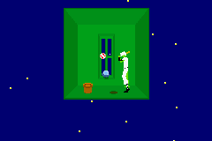

L’article suivant a été publié exclusivement sur le web; tout ce qui en pouvait être dit, pouvait être dit encore du millier d’autres articles publiés sur le site et composés selon la même maquette. S’il est le premier document interactif à être traité ici, c’est aussi le premier qui soit illustré—ce qui justifiait déjà son ajout à la bibliographie. La mise-en-page répond aux besoins d’une ligne éditoriale, plus qu’à ceux d’un genre ou d’un texte. J’en ai revu la composition, le format et l’interface (la gestion des petits écrans particulièrement). Le mode nuit est accessible en cliquant sur le signe en fin de note. Bien entendu, je ne recommanderai pas de lire l’article dans sa présentation originale.■
This entry is part 1 of 4 in the Rhythm Heaven series
There was something always off about the WarioWare series. Like, you’d play it for roughly an hour, at which point you’ve seen everything the game has to offer. And then you nod your head and go “Isn’t that clever?”, before shelving it or tossing it in a box or whatever. It only emerges so you can pick it up later to show your friends, who will probably come to approximately the same conclusion. They’re definitely fun and creative, but they’re also shallow as hell. Intentionally, too.
The reviews of the game at the time when it came out in 2003 were amusing, which seemed to think Nintendo had created this grand new genre (the “microgame”) and were unrelenting in their praise. It would be great to see the day when certain video game journalists get burnt out and try their hands at other topics. (On the subject of Wild White Nacho Doritos: “Quite simply the most gorgeous chip man has ever produced. 9.5/10” —Dav Halverson.) By the time the later games came out (the slightly amusing Twisted!, the boring Touched!, and the fidgety Smooth Moves), the press had wisened up and starting seeing that, yeah, they were fun—but for how long?
It didn’t matter at this point—it seemed Wario and pals were unofficially carrying the torch for Nintendo’s new direction with the Wii. Who needs depth when you can have TOTALLY CRAZY FUN with DANCING DISCO DOGS just like the FLAILING PEOPLE on those WILD COMMERCIALS directed by CRAZY MARKETING FOLKS who would probably type everything IN ALL CAPS if it wouldn’t get them a SLUG straight in the KIDNEYS.
So back in 2006, when Nintendo announced that the internal folks who made WarioWare would be doing a crazy rhythm title for the Game Boy Advance, to a cynic it might’ve seen like money wasted on something that was more of a creative art project than an actual game.
That assertion is a bit hasty. There’s a lot of that craziness in Rhythm Tengoku, and yes, a lot of it may come off as simplistic, but there’s a lot more variation—and most importantly—a sense of challenge, that really works in its favor.
Departure from the caps
Despite its name, Rhythm Tengoku (which became translated as Rhythm Heaven in North America and Rhythm Paradise in Europe for the later titles, though the original GBA game sadly did not leave Japan) doesn’t want to be known as a mere rhythm game—the cover describes itself as a “norikan” (“groove sensation”) game, which is really just fancy PR speak for… well, a rhythm game. While it was designed and programmed by the WarioWare folks, it was the brainchild of a studio called J.P. Room. This is the production name for Tsunku (who has a little male symbol at the end of his name, just in case you didn’t know how manly he was), a real life music producer partially responsible for such popular atrocities as Morning Musume, an expansive group of young girls who, one may assume, have Logan’s Run-style crystals hidden somewhere in their body that blink when they hit the ripe old age of seventeen, where they “graduate” into the real world to become drug addicts and are replaced with other girls who may or may not have hit puberty.
Of course, none of this means anything to anyone outside of Japan. But I’ve got to have a feeling that some of the nerds on 2ch found out about this connection and immediately assumed that anything associated with this kind of J-Pop was going to be a total disaster. American pop music is huge, but no one outside of music scene could even tell you a name of a music producer, but it’d sort be like if Nintendo listened to Max Martin, the whiz kid behind such timeless bands as N’Sync and Backstreet Boys, and turned his ideas into a video game. But things have a funny way of working out, even with the odds horribly stacked against them—there are no less than three Moonwalker games, each personally conceived by Michael Jackson, and two of which are actually kind of good.
It helps, of course, that Nintendo actually knows how to make decent games. Rhythm Tengoku seems to share spiritual bonds with Nintendo’s other crazy portable rhythm series, the Osu! Tatakae! Ouendan! games, and its localized brother, Elite Beat Agents. Yes, similar to WarioWare, Rhythm Tengoku offers blitheringly simple controls—although sometimes you’ll need to use the directional pad, most of the time you’re just pressing the A button—and a graphical style that either looks absurdly minimalistic or seems to be the art project of a bunch of special ed computer science students. But it’s drastically different, too, not only from Nintendo’s titles, but from most other rhythm games as well. This may not be immediately apparent!
Before I get started…
Dance Dance Revolution is a rhythm game where the music doesn’t react to user input—the player matches their foot steps to the arrows, but it doesn’t affect the song. We’ll say this is one end of the rhythm game spectrum. Progressing away from this, you have Parappa the Rapper and Space Channel 5, which are little more than fancy games of Simon Says with a bit of style. Then there are games like Gitaroo Man and Guitar Hero, which basically says “Here’s a broken song—fix it!” They’re fun, but you’re really just filling in the blanks. Finally, there are the likes of Taiko Drum Master and Ouendan, which takes a solid, fully formed song and requests that the player add in predetermined beats, which is the best kind of rhythm game. Ouendan does this a bit better than Taiko, if only because there are very few songs where the pounding beat of a gigantic Japanese drum makes any lick of sense (and yet somehow the clashes and whistles work better.) Anyone who’s played Elite Beat Agents probably can’t help but sing along with their own percussion every time Sk8er Boi comes in the radio, regardless of how much they may actually hate Avril and her mall-punk growl.
+1 on the comment above
In general, Rhythm Tengoku fits nicely with the last style of rhythm game, although it does have a fair mix of the Simon Says type contests. However, there’s one major distinction—all of the music is original, perfectly engineered to sound like a video game, since it’s coming straight from a video game system that doesn’t even really have a sound chip. Yeah, a few of the songs have vocals, but a good number of these songs would feel perfectly at home in a Mega Man game. But they’re catchy, which is naturally the most important part of a game like this.
There are technically 48 stages in Rhythm Tengoku, but the number is slightly misleading. The selection screen breaks everything down into eight tiers, each with six stages. Five of these stages are completely unique, but the sixth is a remix of the previous games using a completely different (and usually slightly longer) tune. Not even 2/3 of the way through the game, many of the older games are repeated, just with slightly different graphics and rearranged music. So when you take the remixes into account, there are probably about 25 unique stages. Some are pretty simple, where you just press a button in a beat, but many of them mix things a little bit. Here are some of my favorites:
Karate House The first game features a cute and somehow slightly sensual female voice singing along as you smash rocks and stuff. “Hey baby. How’s it going? This. Beat. Is. Non. Stop!”
White Ghost “Thosewhite guys are causing a ruckus! Kill them all!” is roughly what the description to this game says. And look at that wide, douchebag grin. Doesn’t it look like he deserves whatever punishment he receives? This one speeds up and slows down, and enters some kind of super slow motion when you nail one of them.
Space Dance The best part about this one is that, if you screw up one of your moves, you get elbowed in the crotch. The song’s also way too catchy too. P-P-P-Punch!
Rabbit Jump In this game, you press the “A” button to a constant beat. Not one of the more interesting ones, but watching a crazy-eyed rabbit bounce and flail haphazardly is a cryptically amusing joy. Plus: what is it with rhythm games and crack rabbits? (see: Vib Ribbon)

Air Batter This is one of my favorites because it zooms the view in and out, stressing how important it is to not rely on visuals. It also nostalgically reminds me of an early SNES game, what with its overdone Mode 7-style effects.
Rhythm Hair Removal What’s more absurd?—that you’re removing facial hair from vegetables, or that it seems to take place in Arabia.
Quiz Alright, some of these are pretty awful. All you need to do is remember the number of beats played by the host. It’s one of those things that sounds easy but is actually frustratingly annoying. Notice the pointy ears and uniform on your character, he kinda looks like a mixture of Captain Kirk and Spock.
Clapping Trio This one requires pretty fast reflexes, since you need to be able to follow up after the first two claps. These cats (maybe?) sport afros in the first stage and later reappear with bright blue bowler hats that appear to be out of 1920s America.
In most rhythm games, simply playing correctly is its own reward, and your penalty for failure is a cacophonious mess. Rhythm Tengoku gives you nice little visual pats on the back for doing well, and minor, goofy little admonishments for screwing up, all of them unique to the given game. Hit the ghost with the right timing in White Monsters, and you’ll snag them in the nose or nick them in the crotch. Hit a ball in Air Batter, and you’ll hear a crack of the bat along with the ball zooming towards the screen. Miss a beat in Clapping Trio and your fellow clappers will aim a disgruntled stare in your direction. When you have a fairly simplistic game like this, a little bit of charm goes a long way to make it worth replaying, and thus make it a major fixture in the cartridge fixture of your DS.
One of the other reasons why Rhythm Tengoku excels is because, at least visually, it doesn’t look like a rhythm game. For example, people originally described Rez as a “musical shooter” game, but it was really just a funky Panzer Dragoon with trance music and strange sound effects. It was cool, but it wasn’t quite what that genre label promised. Picture something like Beatmania, but replacing the boring falling bars with graphics of a vertical shooter like Radiant Silvergun, where the enemies are all different colors, and each makes a different sound when you shoot them. So if you play everything properly and time your shots perfectly, you’d end up destroying enemies and creating some totally awesome music. Who knows if anything like that would work in practice, but Rhythm Tengoku gets a little closer to that ideal by ridding itself of typical rhythm game visual aids like floating buttons or falling gems. There are visual cues, naturally, but they’re subtle, and Rhythm Tengoku delights in making you expect them, then taking them away, seeing if you’ve properly gotten in time with the song’s beat.
Basically a dating sim
Even then, there are only a couple songs that ask you to keep a constant beat. A good number of them require that you listen for sound cues and time your button presses with those, demanding that you have quick thinking and reflexes. This reactionary-style gameplay is simple, but it’s still fairly challenging, and eliminates the need to parse out a near unending stream of falling arrows or gems or whatever. However, the one minor issues with the games’ language barrier is that it requires you to listen for a few Japanese phrases, like the marching game or the rap battle. But otherwise, the instructions are so obvious, and the tutorials so plenty, so the Japaneseness generally isn’t a huge impediment.
Of course, this simplicity means you can tear through the game pretty quickly. The difficulty judge is pretty lenient in the early levels, and even later on, you can pass stages even though you’re not doing particularly well. The real key, though, is the way the grading system works. When you complete each stage, you’re given a quick little comment and given one of three ranks: “Yarinaoshi”, (“Retry”), “Heibon” (“Mediocre”), or “High Level”. There are no “good” or “great” ranks—even if you do pretty well, but not high enough to get the best, you’re stuck with being “mediocre”. It’s like you can get three grades on a test—an A+, a C and an F. You don’t even need to understand the text to understand the message—the mediocre rating is accompanied by a clumsy little sound effect and dull grey letters. And no video game player wants to be told they’re “just mediocre”—they’re gonna try to get better, dammit. And it’s not even like the ludicrous requirements in Mega Man Zero, which getting anything more than a C requires speed running through a stage without getting hit and without using any weapons—since most stages here are a little over a minute long, reaching that “high level” just requires a bit of dogged persistence. Mastering a song will also give you a medal, which are stocked and used to unlock various other mini-games and such.
Every once in a while, at random, Rhythm Tengoku throws down the virtual gauntlet and challenges you to get a perfect game on a stage you’ve already beaten. And while you can try it up to three times until you get it right, if you ignore it and choose another game, the challenge disappears, potentially forever. And, are you going to stand for that crap? It’d be awesome to see this applied randomly in other games. Like you boot up your Xbox 360, and a stern message, passively aggressively written in that calm, professional system font, pops up. Hey. You. Fucker. Beat Chapter 2 of Gears of War 3 without dying on Hardcore difficulty. What? Can’t do it? You a pussy? And you could decline this request, and technically the Xbox wouldn’t think less of you. But it’d bite at the back of your soul, if you’re the kind of person that lets that thing get to you, anyway.
Back in the context of Rhythm Tengoku, there are tangible benefits which reward you for fighting for the game’s approval, mostly in the form of stupid little “endless” mini-games and toys of different animals that make different noises. There are a bunch of cool development notes, nonsensical interviews, and song lyrics, all of which are useless without being able to read Japanese. There’s also a jazz lounge you can visit to get encouragements from some virtual winos, which is… uh… interesting. And finally, there are a whole bunch of drum lesson mini-games, where you need to mimic the exact beats of this pro drummer kid named Drum Samurai. It’s a bit boring, visually, compared to the rest of the game, but it’s there if you need something to master. Otherwise, completing the game is still pretty easy even if you do master everything, but it gives a sense of challenge not present in WarioWare, which really only has lasting value in a group setting, as you try to best each other’s high score.
So
Rhythm Tengoku was a reasonable hit amongst Japanese gamers, selling much better than the Ouendan. And yet, Nintendo denied localization. It’s not that it was too Japanese—we’ve seen crazier stuff brought over by Nintendo themselves—but, like Mother 3, it bore the unfortunate fate of being on the Game Boy Advance. Nintendo always seemed to claim that the DS and GBA would live side by side, but as soon as the DS came out, the GBA shelves became cluttered with all kinds of licensed crap, and the few decent games (from Nintendo themselves, like Drill Dozer and the years-old Tales of Phantasia port) suffered underwhelming sales. It’s too bad, naturally, but it’s still easy to play, whether you grab the import or play it on an emulator (although my computer has timing problems with every GBA emulator out there, which completely throws off the game.) Plus, if you buy the game for real, you get some nice stickers!
In 2007, Sega also ported the game to the arcades, updating the graphics and sound a bit, and adding in extra multiplayer games. It’s a bit rough in judging, because you’re given a limited number of “lives”, which you lose any time you’re offbeat. Lose too many, and you lose the game. Of course, this never came out anywhere but Japan.
This entry is part 1 of 4 in the Rhythm Heaven series